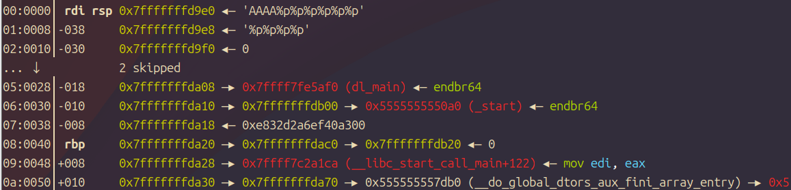
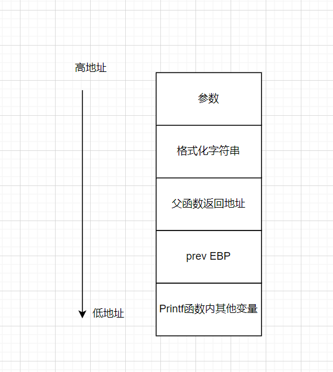
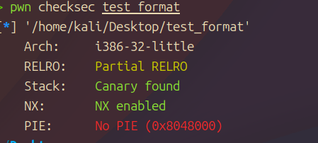
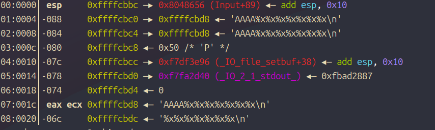
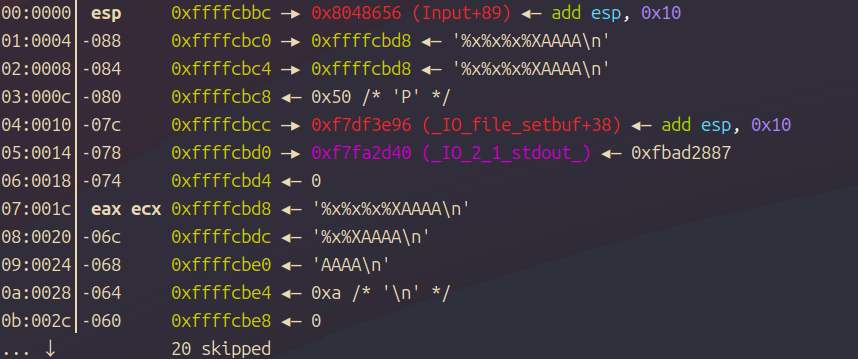

PWN的格式化字符串漏洞初探
本文主要参考了CTF-WIKI的pwn部分：原理介绍 - CTF Wiki
以及部分Bilibili教学资源如XMCVE 2020 CTF Pwn入门课程_哔哩哔哩_bilibili
还参考以下大佬的文章：
CTFer成长日记11：格式化字符串漏洞的原理与利用 - 知乎
我一直想要学习格式化字符串漏洞，至少搁置了半年吧，这次重新学习Pwn，也要重拾之前的知识了！
介绍
格式化字符串是将一些数据按照固定格式输出的控制字符串，比如一串字符串aaaa，可能在内存就是0x610x610x610x00，我们想要打印出这串字符，就得用%s，若是打印出数字格式，可能需要使用%x，打印出地址则是其他的如%p（使用%p需要跟&+变量名）这个地址得是有效地址
C/C++遇到以下函数，基本都是采用格式化字符串了。当然，虽然看起来格式化字符串这么威力巨大，实际上CTF赛题专门考察格式化字符串的情况却不多，大多数情况以堆为主，或者结合一些考点来考察。尽管如此，格式化字符串漏洞仍然是我们需要掌握的。
格式化字符串一般结构可参考wiki：格式化字符串 - 维基百科，自由的百科全书
注意：type的不同，%后部分参数所代表的含义也是不同的。但是所谓大同小异，掌握一种之后吸收起来会特别快，具体的例子是%x和%f的%.x含义就是不同的。
到后面还会根据场景不同进行介绍。下面的demo则是几个简单的实例
1 |
|
这里也展示了%p接受参数的要求，即必须是有效地址。
在做题中，一般见到的也就是printf这个格式化字符串函数，实际上还有其他的，比如scanf是输入格式化但是这个不常用，以及printf的其他“近亲”比如sprintf等。
对于printf函数来说，他其实接受参数是一个格式化字符串+其余变量。比如上文的printf("%p\n", &a)其实就是两个参数，一个是格式化字符串，一个是变量a的地址。对于x32程序来说，显然这些东西都是存储在栈之上。printf解析的时候，会读取第一个参数，假如有%，就认为其为一个格式化控制字符，再找对应位置的参数进行解析，如果没有%就好办了，直接把这个字符送到缓冲区即可。
这就是我们所说的printf函数的基本原理，唯一的和其他函数参数不同的就是他是接受参数内容不固定，而且会根据格式化字符串来执行。
更深层次的实现，则是写在了c语言某个头文件之中，大家感兴趣可自行查看源码，是根据va_list、va_start、va_arg、va_end 这一组宏来读取可变参数。
利用
格式化字符串存在多种利用姿势，从CTF出发，我们可能更关注它泄露栈上内容和任意地址写。从简单的手法来说，我们可以让一个程序崩溃。
程序崩溃
相信大家都知道，%s就是将一个值解析为字符串，而且是遇到0才停止。然鹅这是理想情况下的%s，现在就来讨论非理想情况下的%s：即格式化字符串接受了无数个%s。。。。。如下所示：
%s%s%s%s%s%s%s%s%s%s%s%s%s%s
程序不可能所有地址都能正确解析为字符串，何况部分内存还有一些保护权限等，总之就是会出现各种异常情况。假如程序没有做异常处理，那自然就会崩溃，崩溃的后果即是业务瘫痪了。假如抢票系统出现这个问题崩溃了，甚至银行系统出现问题了，后果可想而知。然而坏消息是我们在CTF竞赛中不能用这个来getflag。
泄露内存
引言
泄露内存一般有以下两种姿势：
1.泄露栈空间内存，如Canary值
2.泄露got表地址，进而获得libc基地址
更极端一点，我们可泄露任意地址内存，dumo所有内存出来，进行分析。当然这个就有点极端了。正常CTF也不会考察这个内容，因为我们一旦能泄露任意地址内存，前两个利用方式足够了。
还记得之前说的吗？printf函数找参数是在栈上找的（32位），当我们格式化字符串写的足够多，那么printf就会老老实实地一个个找，这时候就可能造成越界，看到本不属于它的栈帧存的东西。
现在我们就写一个demo实例：
1 |
|
现在我们运行，然后在call printf之前观察一下栈：

很显然他会打印相对于格式化字符串第一个参数，实际测试后发现是垃圾数据\n也就是回车，可能和缓冲区有关，大概思路是一样的。
下面这张图可能会更让大家好理解一些。

x32是参数从右往左入栈，格式化字符串如果是%x%x%x，那么从格式化字符串上一个一直到第三个的栈内保存值都能被打印出来。可以理解为printf函数是个老实人，只按照规章办事，格式化字符串就是它的规章制度，他要几个，那我就打印几个（就算程序崩溃也不关我事）。
所以泄露栈的内容也是十分简单，我们只需要输入多个%x或者%p就行了，事实上还有更简单的方法：
%n$意思是输出从格式化字符串开始第n个参数（也就是printf函数的第n+1个参数）我们可根据n的不同，快速定位到我们想要的第n个参数，划重点这里要考！
举一反三，我们将%n$x改为%n$s，就能以字符串形式泄露值，假如栈存放一个字符串的地址，那么相应的字符串会被打印出来。事实上相比于%x，我们更中意%p，它可以在32位、64位都能自适应的很好。
泄露任意地址内存
上面只是开胃菜，现在才是主菜
这个强大如我也是思考了很久才理解。现在假设一个场景，我们已经掌握到一个格式化字符串漏洞，现在想要泄露一个任意地址0xdeadbeef。我们有什么思路呢？
其实很简单，我们利用%s的特性（读取栈上数据作为指针），只要我们在栈上能找到一个字符串，且其包含0xdeadbeef这个地址，就成功踏入泄露的第一步。接下来只需要让%s读取到它即可。
所以我们现在需要解决两个难题：
1.怎么构造0xdeadbeef
2.怎么构造%s这个格式化字符串？
第一个问题很简单，只需要利用输入函数即可。我们已经有格式化字符串漏洞，说明格式化字符串能被我们控制，所以简单的地方来了：只需要在格式化字符串里面，写一个0xdeadbeef：如0xdeadbeef%p%p%p，还记得之前介绍的吗？遇到的非%字符也能放在格式化字符串里面，只不过不会被解析罢了。
现在我们需要解决最振奋人心的问题：我们已经知道了%n$可定位到某个地址，怎么让%s刚好读到这个地址呢？换句话说，我们确定n了，就能使用%s精确定位到目标地址。有的新手朋友可能懵逼了：不是已经出现在格式化字符串里面一个0xdeadbeef吗？不要忘记，对于printf函数来说，他会原样输出这个地址，所以我们拿不到信息。对于%s这个格式化参数，你不能指望它往自己本身读取参数，他只能读取前面的参数！唯一的办法就是找到输入函数输入后在栈上什么地方（比如一个main函数局部变量）保存的0xdeadbeef。因此我们就接触到一个确定n的方法：tag定位法。
简单来说，我们输入一串重复的字符串，如AAAA，然后再输入多个格式化字符，观察出来的内容，包含AAAA这个字符的连续ASCII码了，就说明找对了。假如不放心，我们还可以输入BBBB、CCCC测试，只要找到对应的偏移，那么就好办了，我们可以瞬间确定n，然后将AAAA替换为对应的地址即可。这里的AAAA、BBBB、CCCC就是所谓的tag。
当然还有另一种办法也很直观，就是直接gdb调试，断在printf函数，观察栈结构，手动数出来偏移。不管什么办法，核心思想都是利用栈上储存数据的特性，将特定地址能被格式化字符串访问到，进而拿到任意地址写的思路。
这个漏洞思考逻辑就是：因为有这个格式化字符串读取的功能，我思考怎么构造数据，才能任意地址读。
注意，这里传地址，是要用p32/p64包裹，用pwntools传递。因为scanf在面对0x、00、\这样特殊的字符，其处理方式是不太好的，不会把他解析为16进制等，因此我们拿到的也肯定不是想要的数据。
覆盖内存
引言
覆盖内存则是格式化字符串另一个新pwn手或者新手程序员都不知道的功能：
%n这个不是输出内容，而是将已经输出成功的字符数量，写入到其对应的变量之中去。可以理解为作用是用来输入变量的%s
一般的payload是这种格式：...[overwrite addr]....%[overwrite offset]$n
着重介绍一下这个overwrite offset，举个例子如下所示：0xdeadbeef%012d%6$n
老演员0xdeadbeef登场，这里的%012d就是输出宽度为12前面补0的整数。我们要知道不加012这个控制字符的话，%n写入多少字节就不是我们能够控制的了，我们用012，这个n就会输出12（因为空格也算字符）。
覆盖栈上内存就不多说了，%n也是用来确定变量的，不要把他特殊化，下面的demo可能会加深大家的理解:
1 |
|
这时a的值将变为20。这是因为%20c在字符b的左侧填充了19个空格，再加上b本身是一个字节，共计20个字节。
这个demo是开头所说的知乎文章截取的，感觉是很形象的说明。
覆盖任意地址内存
可能有的人会说，我还看鸡毛，已经学会了%n了！这就是学习不专注，当然这也不能怪大家，我之前就是只学到了这里，然后不再深入，发现做题还是不会。这就是说明我们知识点还是有欠缺，或者没有体系，掌握的不熟练。现在就带大家试想以下两个场景：
1-请问我如何只覆盖内存地址为1（注意，0xdeadbeef这个目标地址就占了不止1字符哦）
2-请问我方便快速地将一个内存地址覆盖为一个很大的数字
相信99%的人都不知道，接下来就给大家来一点做题技巧！
小数字覆盖
有的脑子聪明地说：我知道，整数溢出，覆盖到极限之后就会从0开始！
很显然这也是一个办法，但是这个办法实在是太蠢了。我们作为聪明人，当然用省力办法：
我们无法覆盖小数字的原因就是前面放了一个地址，那我们把地址放在后面不就行了，只要找到对应的偏移即可
比如改为aa%k$n0xdeadbeef只要抓住偏移k，一切问题就会解决
大数字覆盖
我们不要用%n接大数字覆盖，这样成功率太低了，而且太慢了。
我们可以回忆一下格式化字符串里面的标志，可以发现有这么两个标志：
1 | hh 对于整数类型，printf期待一个从char提升的int尺寸的整型参数。 |
所以说，我们可以利用 %hhn 向某个地址写入单字节，利用 %hn 向某个地址写入双字节
即逐字节更改内存的值，利用小端序存储的特性，就可以实现覆盖某个值了。
这里将官方脚本解释一下：（豆包小姐跑的）
1 | # 导入pwntools库，用于进程创建、payload构造（p32/p64） |
检测
官方给了个工具LazyIDA，这是个IDA插件。
安装之后右键点击代码，有一个scan format string 这个选项，即扫描漏洞，一般都能扫出来。

（检测十分简单，这也是实际中不多见的原因之一吧）
实战：Polar-Test_Format
这道题来自polar靶场。这道题目保护措施如下

可以看到有金丝雀，那基本告别栈溢出了。
1 | unsigned int Input() |
先来看看其代码。可见有一个buf字符串，能被我们控制。他要求我们修改n这个地方的地址。那很显然需要我们在格式化字符串里面写个n，根据各位今天学习的成果，不难看出这就是任意内存覆盖考点的小数据覆盖。
顺势也给大家介绍一下刚才没有提到的知识点：

这个是正常的AAAA在前面的内存布局

这个是AAAA在后面的
可以看到由于内存截断，所以AAAA在后面对应的偏移也会增加，找偏移的时候要注意哦！
这里我们需要写入4字节，所以就用AAAA在前面，地址放在后面进行测试
1 | 00:0000│ esp 0xffffcbbc —▸ 0x8048656 (Input+89) ◂— add esp, 0x10 |
这里我们可看到，BBBB偏移应该是8
所以写出payload：
1 | from pwn import * |
由此看出，格式化字符串，跟着土哥学，很简单嘿嘿（装逼说的，我是菜鸡）